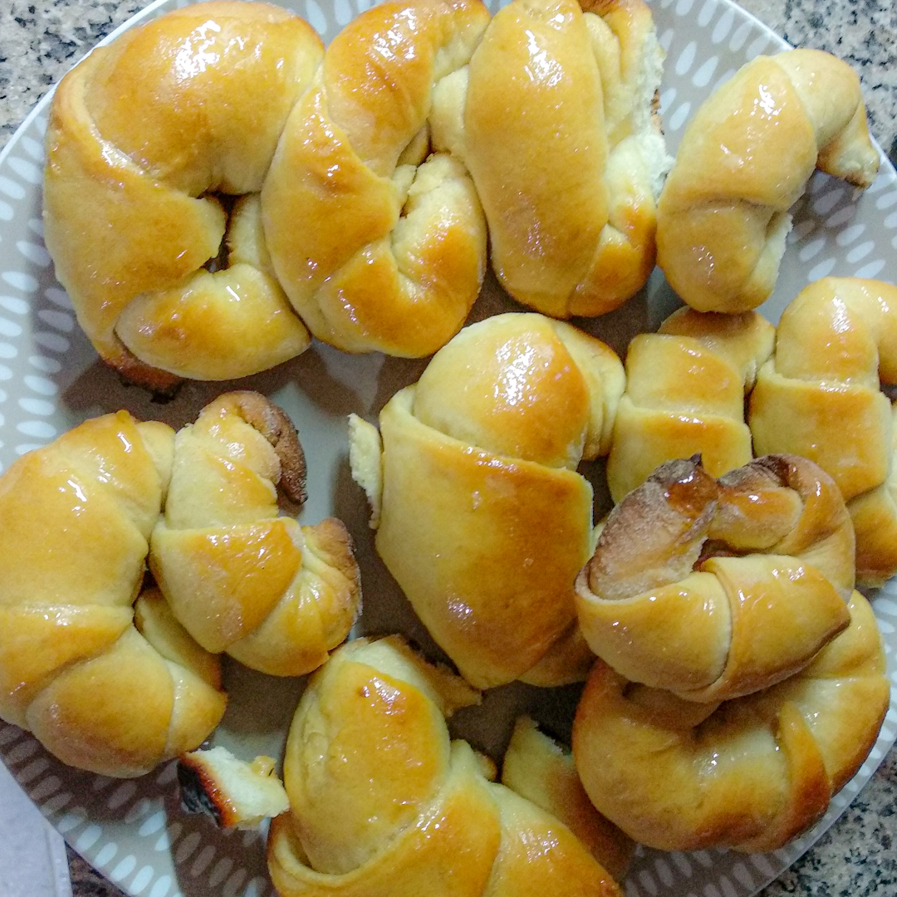

Medialunas

Ingredientes
- Para la esponja:
- 7gr. Levadura en polvo
- 1 cdita Azúcar
- 1 cdita Harina
- 100ml. Agua tibia
- Para la masa:
- 500gr. Harina común
- 130gr. Manteca
- 1 cdita Esencia de vainilla
- 1 Huevo
- 100ml. Leche tibia
- 100ml. Agua tibia
- 140gr. Azúcar
- 1 pzc Sal
- 1 pzc Bicarbonato
- Para el almibar:
- 1 taza Azúcar
- 1 taza Agua
Procedimiento
- Hacemos la esponja mezclando la levadura, el azúcar, la harina, agua y dejamos reposar.
- Mezclamos la harina, 1 cdita de esencia de vainilla, 130gr de manteca pomada, 140gr de azúcar, pizca de bicarbonato de sodio y de sal, agregamos la esponja, agregamos los 100ml de agua tibia y los 100ml de leche tibia.
- Incorporamos todo, tiene que quedar una masa pegajosa.
- Amasamos por 13 minutos y dejamos levar hasta que duplique su tamaño.
- Desgacificamos y estiramos.
- cortamos la masa en triangulitos y enrrollamos dándole forma de medialuna.
- Llevamos a una placa enmantecada, las pintamos con huevo y leche.
- Llevamos al horno 180° por 30 minutos hasta que estén doradas.
- Hacemos el almibar con partes iguales (1 taza) de agua y azucar.
- Ya hechas las pinceleamos con el almibar.